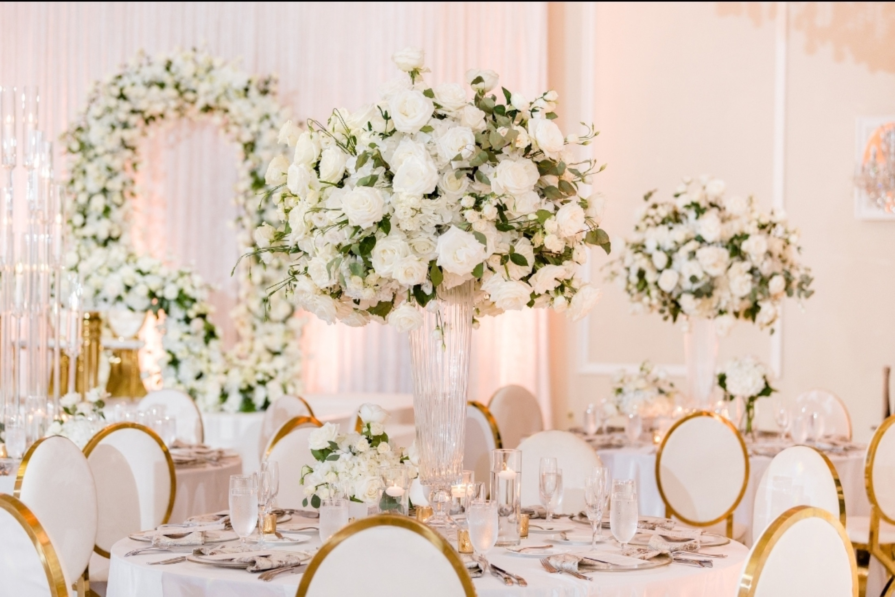

The venue is the first big decision you make, and nearly every decision after it depends on it.
Your guest count, your menu, your décor, your timeline, even the way your guests arrive: all of it has to fit inside the rules of the room you choose. A venue can be breathtaking on a tour and still be unable to support the celebration you are planning.
This checklist holds the questions our planners ask on every venue tour. Take it with you, ask the ones that apply, and do not pay a deposit until the answers that matter are in writing.
If your celebration brings together more than one culture, more than one ceremony, or traditions with specific needs — sacred fire, a procession, cultural catering, attire changes — the venue matters even more. The final chapter is written for you.
With care, Irene
Irene Ntiako · Founder & Creative Director
Start here
Before you contact a single venue
The venue search often goes wrong when couples start by touring. Start by deciding. These five steps can save you weeks, and tours of venues that were never right for you.
01
Choose your months, then your datesPick two months you would be happy to marry in, then two or three dates inside them. Every venue conversation then starts with availability, not guesswork.
02
Choose your area, wider than you thinkPick a region, not a single city. In the DMV, that might mean Maryland, Washington DC, and Virginia. Two or three states multiply your options.
03
Decide your styleA hotel ballroom, a standalone ballroom, an industrial space, a barn, an estate or garden. And decide whether you want a space that is already beautiful, or an empty canvas to transform.
04
Decide how your day flowsCeremony, cocktail hour, and reception all in one place? A church ceremony, then a reception venue nearby? An outdoor ceremony? These answers change which venues can work.
05
Build your shortlist, then email before you tourWe recommend listing five to ten venues that fit, then emailing each one with your guest count to ask for a rough total cost and a video walkthrough of the space.
Your starting point
My two months
My dates
My area
My style
My flowAll in one venueChurch + receptionOutdoor ceremony
My shortlist
Then narrow with facts
The estimates and the videos will cut your list to two or three serious contenders. Tour only those, in person, with this checklist in hand.
If you only ask ten
10 questions to never leave a tour without
Each one is starred ★ in the checklist, with room for the answer and the name of the person who gave it.
01
What time does everything have to end: music, the bar, guests, and vendors packing up?An early end time changes the whole shape of the day.
02
How many guests can the room really seat once the dance floor, stage, bars, and lounge areas are in?A room listed for 200 may seat far fewer with your layout.
03
Can we see the rain-backup space, and does it fit all our guests?A rain plan only helps if you would be happy celebrating in it.
04
Do we have to use the venue’s caterer, pick from their list, or can we bring our own?If you must use theirs, the menu and the price are largely decided for you.
05
Exactly how many hours do we get to set up décor before guests arrive?If the answer is two, the design you are picturing may not fit.
06
Can large installations get into the room without stairs or tight turns?If the big pieces cannot get in, the design changes, however beautiful the room.
07
Can florals, chandeliers, or draping hang from the ceiling?Hanging installations are often the first thing a venue says no to.
08
Does the quote include everything: venue fee, service charge, tax, staffing, security, cleaning, rentals, parking, valet, power, and overtime?Service charges, tax, and overtime are rarely in the first number.
09
Can our guest count go down after we sign, or only up?Sign for 200, have 150 come, and you may still pay for 200.
10
What deposit and payment schedule do you require, and what happens if we cancel or postpone?Know what you would lose before you pay, not after.
The one rule
“We’re flexible” is not a yes
Here is how it can happen. On the tour, you mention that your caterer will cook on site, and the coordinator smiles and says, “We’re very flexible.” Months later, the contract arrives, and it says outside food must arrive fully prepared. Nothing was promised in writing, so nothing was promised.
Before you sign
If a promise affects your ceremony, décor, food, music, parking, guest count, budget, or timeline, ask for it in writing.
If you hear this, slow down
“We’re flexible,” with nothing in writing behind it.
Only an hour or two to set up before guests arrive.
The rain-backup space can’t hold everyone, or you wouldn’t want to use it.
The quote leaves out the service charge, tax, or overtime.
How to use this checklist
One box, three marks
01
Before the tourRead it through and cross out anything that does not apply to your wedding.
02
On the tourAsk each question and mark its box. For starred questions, write down the answer and who said it.
03
After the tourCopy every slash onto the Chase List at the back, and email it to the venue to confirm in writing.
04
Before you signAnything still not in writing becomes a change to request in the contract, or a reason to keep looking.
EmptyNot asked yet.
SlashAsked, and told yes out loud.
CheckConfirmed by email or in the contract.
★ DealbreakersThe questions that can end a venue. Get the answer and the name of the person who gave it.
VerdictAt the end of each section, circle Clear, Needs follow-up, or Dealbreaker. Flip through later and see where you stand.
What to bring to the tour
Your guest count, and the most it could grow to
Your wedding date, or the dates you are considering
Your budget range for the venue
Photos of your design inspiration
A list of your ceremonies, traditions, and must-haves
Your phone, for photos and video of every room, door, and entrance
This checklist and a pen
Your planner or designer, if you have one

01Date, Hours & Curfew
Setup, the celebration, and cleanup all come out of the same rental hours.
What time can our vendors start setting up, and when does setup have to be finished?
What time does everything have to end: music, the bar, guests, and vendors packing up?An early end time changes the whole shape of the day.
AnswerWho said it
What does it cost if we run over time, and is that charged by the half hour or the hour?
Is there a local noise rule that ends outdoor music earlier than the venue’s own curfew?
Is any other event happening at the venue on the same day?
Verdict
ClearNeeds follow-upDealbreaker
02Real Capacity & Layout
The capacity on the brochure is usually for an empty room. Your dance floor, stage, bars, and décor all take seats away.
How many guests can the room really seat once the dance floor, stage, bars, and lounge areas are in?A room listed for 200 may seat far fewer with your layout.
AnswerWho said it
Can we see the rain-backup space, and does it fit all our guests?A rain plan only helps if you would be happy celebrating in it.
AnswerWho said it
If the weather turns, by what time do we have to decide, and are tents, heaters, or flooring allowed?
If the ceremony and reception are in the same room, where do guests wait during the changeover, and does it fit everyone?
How many restrooms are there, and are they enough for our guest count?
Is there a getting-ready space for both sides, and can hair and makeup work on site?
Verdict
ClearNeeds follow-upDealbreaker
03Alcohol & Bar
Whoever holds the license decides who pours and when the bar closes.
Does the venue have its own liquor license, or do we need a permit?
What time does the bar have to close, and what bar fees are there?
For your planner: who arranges the permit, bartenders, security, and liquor insurance, and whether the venue must be named on the policy.
Verdict
ClearNeeds follow-upDealbreaker
04Catering & Kitchen
If your caterer cannot cook the way your menu needs, the meal you are picturing may not be possible here.
Do we have to use the venue’s caterer, pick from their list, or can we bring our own?If you must use theirs, the menu and the price are largely decided for you.
AnswerWho said it
Can our caterer cook on site?
Can dietary and allergy needs be met?
Is there a food and drink minimum, and is it lower on off-peak days or seasons?
Verdict
ClearNeeds follow-upDealbreaker
05What’s Included
“Included” can mean anything. The chairs may be included; the chairs you want may not be.
Which tables, chairs, linens, place settings, bars, and dance floor are included?
Can we see the included pieces, and what costs extra to deliver, set up, or clean?
Can the dance floor be wrapped or covered?
Verdict
ClearNeeds follow-upDealbreaker
06Décor Setup & Load-In
Your design is only as good as the hours and the access you get to install it.
Exactly how many hours do we get to set up décor before guests arrive?If the answer is two, the design you are picturing may not fit.
AnswerWho said it
How many hours do we get afterwards to take everything down?
Can setup start the day before, and can décor stay overnight?
Can large installations get into the room without stairs or tight turns?If the big pieces cannot get in, the design changes, however beautiful the room.
AnswerWho said it
What time does the room have to be guest-ready?
Are real candles allowed, and are there rules on the holders (floating only, enclosed)?
What can be attached to the walls, ceiling, or floor, and are tape, confetti, loose petals, or sparklers allowed?
For your planner: whether the room is on the loading level, the dock or service entrance, and measuring the path from the truck to the room.
Verdict
ClearNeeds follow-upDealbreaker
Notes
07Lighting, Effects & Power
Lighting, music, hanging florals, and first-dance effects all need permission, and power.
Can florals, chandeliers, or draping hang from the ceiling?Hanging installations are often the first thing a venue says no to.
AnswerWho said it
Are special effects allowed, like cold sparks, a low cloud for the first dance, or haze?
Is there backup power if the electricity goes out?
For your planner: how much power the room has for lighting, music, and catering, the ceiling rigging points, and approvals for effects.
Verdict
ClearNeeds follow-upDealbreaker
08Parking & Arrival
Arrival is your guests’ first impression. A long walk in the rain is hard to undo.
How many guest parking spaces are there?
Is parking free, validated, or paid by guests?
Is valet required or optional, and what does it cost?
Where do guests get dropped off, including shuttles, rideshare, and accessible drop-off?
Is there overflow parking, and would we need a shuttle?
Is the walk from parking safe, accessible, and well lit in bad weather?
Verdict
ClearNeeds follow-upDealbreaker
Notes
09Cost, Contract & Your Contact
The quote is rarely the total, and the contract is the only promise that counts.
Does the quote include everything: venue fee, service charge, tax, staffing, security, cleaning, rentals, parking, valet, power, and overtime?Service charges, tax, and overtime are rarely in the first number.
AnswerWho said it
Are there admin or credit card fees on top of the service charge?
Can our guest count go down after we sign, or only up?Sign for 200, have 150 come, and you may still pay for 200.
AnswerWho said it
Will everything we’ve agreed go in the contract?
What deposit and payment schedule do you require, and what happens if we cancel or postpone?Know what you would lose before you pay, not after.
AnswerWho said it
Will the person planning with us be the one there on the day?
Verdict
ClearNeeds follow-upDealbreaker
Notes
Section 10 · For multicultural weddings
Questions for Multicultural Weddings
A venue saying it hosts multicultural weddings isn’t the same as confirming it can host yours. Ask only what matches your traditions, and name each one.
iCeremonies & Spaces
Can the venue host two or more ceremonies, room changes, rehearsals, and cultural or religious leaders?Welcoming multicultural weddings is not the same as fitting the traditions in yours.
AnswerWho said it
If the room changes between ceremonies, how long does that take, and where do guests wait?
Does the seating still work once your cultural structures, like a mandap, chuppah, or stage, are in the room?
Is there a room for prayer, preparation, or gathering before the ceremony?
iiSacred Fire & Ritual Materials
Are sacred fire, incense, oil lamps, candles, rice, petals, powders, and ceremonial foods allowed?Name the exact ritual: “sacred fire, indoors, for forty minutes” gets a real answer.
AnswerWho said it
What approvals does each of these need, and who arranges them?
For your planner: fire-marshal approval, ventilation, protective materials, and insurance for any open flame.
Verdict
ClearNeeds follow-upDealbreaker
iiiCultural Cuisine
Can your caterer cook on site with what the menu needs, like tandoors, grills, woks, propane, or extra refrigeration?
Can halal, kosher, Jain, vegetarian, fasting, and allergy needs be met without cross-contact?
ivProcessions, Attire & Language
Is there room for a baraat or other procession, with musicians, dancers, or a horse or car, without blocking parking or traffic?
Are there enough private rooms for outfit changes, stylists, family, elders, performers, prayer, and nursing?
Can signs, programs, screens, and announcements be in more than one language?
vExtended Timeline & Guest Experience
Is the rental window long enough for every ceremony, outfit change, meal, performance, and photo?
Where do guests wait between parts of the day, and can drinks and snacks be served there?
Can décor and ceremonial structures stay overnight, safely stored?
Verdict
ClearNeeds follow-upDealbreaker
Notes · your traditions and what the venue said
After the tour
Your Chase List
Copy every question you marked with a slash: asked, but not yet in writing. Email the list to the venue, and check each one off as it comes back.
Question
Who said it
In writing
The last step
Before You Sign
01
Get a complete, itemized quote.
02
Have your designer check load-in, rigging, and power.
03
Make sure every approval you were given is in the contract.
Lady Victoriadesigns
Lady Victoria Designs provides luxury wedding planning and full-room event design with thoughtful logistics, strong client advocacy, refined aesthetics, and celebrations that honor each couple’s priorities and traditions.
Touring venues and want a second set of eyes? We invite you to schedule a design consultation.
Planning a multicultural, multi-ceremony, or culturally detailed wedding? We invite you to schedule a design consultation.
Bring this checklist and your venue contract — we will review the answers with you and help you confirm the venue can support the celebration you are envisioning.